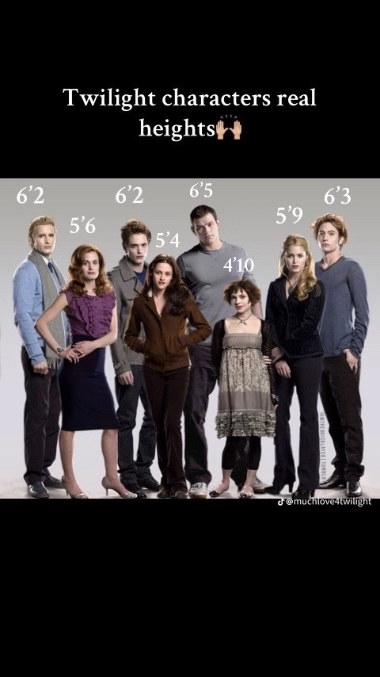

吸血鬼角色身高的單位轉換輔助閱讀
本網頁的作者不僅是吸血鬼文化的熱衷愛好者，還是深度探討東西方吸血鬼與殭屍題材的專家。多年来，他接觸過大量的吸血鬼作品和殭屍電影，無論是西方經典如《德古拉》、《夜訪吸血鬼》、《刀鋒戰士》、《暮光之城》、《凡赫辛》、《吸血鬼獵人：林肯總統》、《Hotel Transylvania》，還是東方的代表作如《殭屍先生》、《殭屍叔叔》、《音樂殭屍》、《殭屍家族》、《殭屍道長》、《千年殭屍王》，他都在不斷比較與探索。這使他對吸血鬼這一文化象徵有了獨特的理解，並且能夠深入分析這些超自然生物在不同文化中的呈現方式和隱喻意涵。
作為一名前端開發者，作者運用自己的技術背景，將這些文化分析與比較呈現於網頁中。他並不滿足於單純的文字敘述，而是通過結合互動性強的網頁設計和創意排版，將這些吸血鬼與殭屍的知識以更直觀、趣味十足的方式呈現給讀者。他將這一前端作品部署到GitHub Pages，開設專案，將自己的文化研究和技術技能結合，讓更多人可以輕鬆地接觸到這些深入且富有思考的內容。
本頁左側的單位轉換器作為閱讀輔助工具，協助讀者將原作截圖中以英制單位呈現的身高，轉換為更熟悉的公制尺度。這種方式可以在不破壞原始文本呈現的前提下，自行建立對角色身體尺度的直觀理解。
